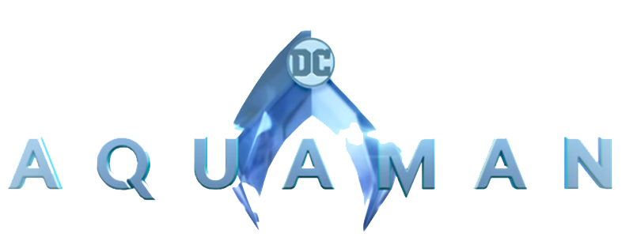

|  |
Aquaman
| Onde Assistir? |
Duração |
Data de Lançamento |
Avaliação Média
(Rotten Tomatoes) |
| HBO Max |
143 minutos |
Dez/2018 |
65% |
Sinopse
Em Aquaman, filho do humano Tom Curry (Temuera Morrison) com a atlante Atlanna (Nicole Kidman), Arthur Curry (Jason Momoa) cresce com a vivência de um humano e as capacidades metahumanas de um atlante. Quando seu irmão Orm (Patrick Wilson) deseja se tornar o Mestre dos Oceanos, subjugando os demais reinos aquáticos para que possa atacar a superfície, cabe a Arthur a tarefa de impedir a guerra iminente. Para tanto, ele recebe a ajuda de Mera (Amber Heard), princesa de um dos reinos, e o apoio de Vulko (Willem Dafoe), que o treinou secretamente desde a adolescência.
Elenco Principal
Jason Momoa - Aquaman
Amber Hard - Mera
Willem Defoe - Vulko
Patrick Wilson - Rei Orm
Nicole Kidman - Atlanna
Dolph Lundgren - Rei Nerus